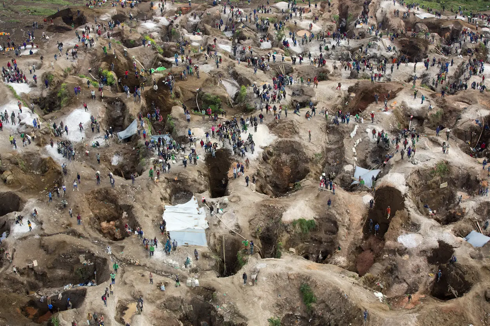
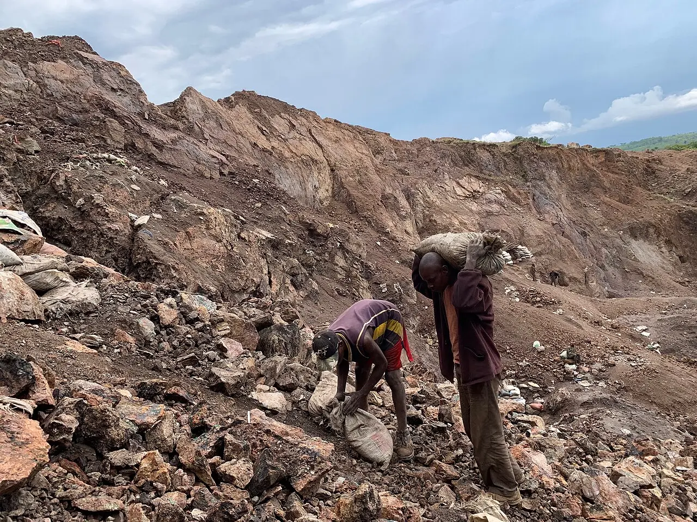
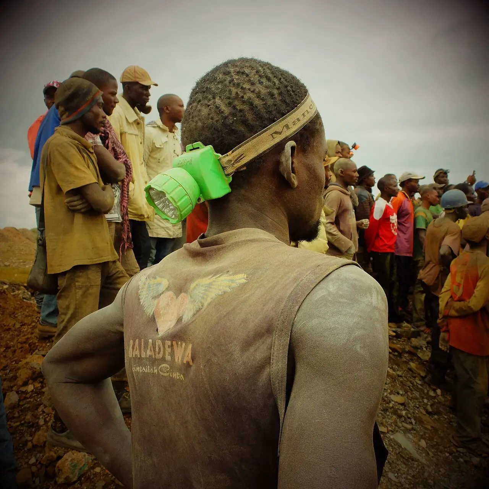
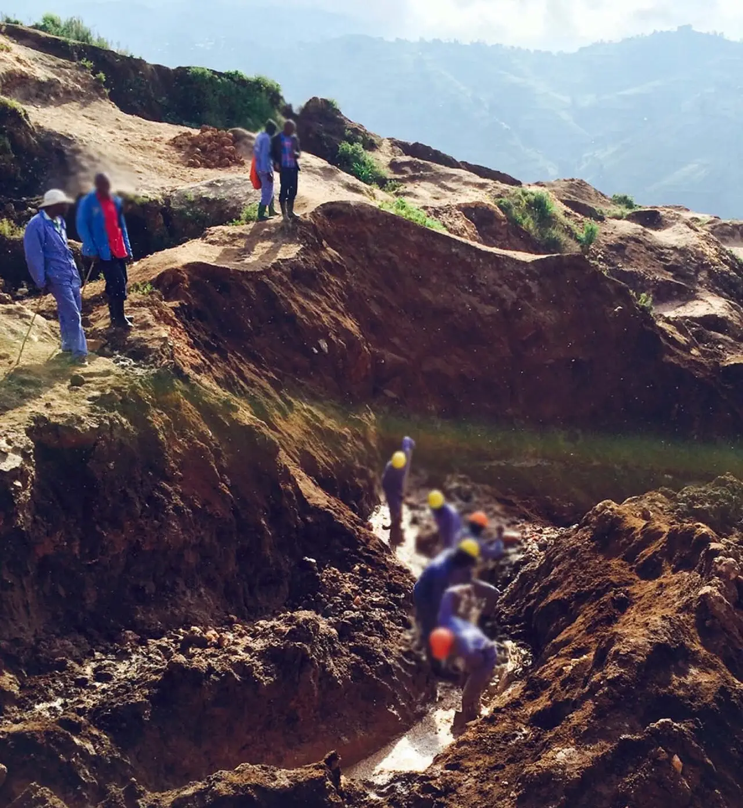
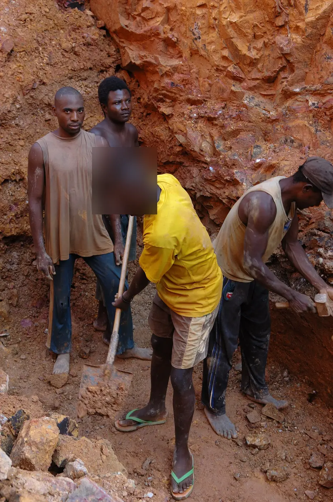

Congo mines about three-quarters of the world's cobalt and much of its coltan, much of it dug by hand. Children have been documented in the pits, an armed group taxes mines in the east, and courts are testing who is responsible further down the supply chain.
Looking for another story? See all Focus stories →

Congo mined an estimated 73% of the world's cobalt in 2025, the US Geological Survey says, far ahead of Indonesia at 14%. Cobalt is used in the lithium-ion batteries of phones and electric cars. In February 2025 Congo temporarily banned cobalt exports over oversupply and low prices, and in October it replaced the ban with export quotas. US Geological Survey · Amnesty International

Much of the digging is done by hand. In 2016 Amnesty International and the Congolese group Afrewatch reported that UNICEF had estimated about 40,000 children worked in mines across southern Congo in 2014, many of them mining cobalt, some as young as seven. Children told researchers they worked up to 12 hours a day for one to two dollars, and at least 80 artisanal miners died underground in the region between September 2014 and December 2015. Amnesty International

In eastern Congo the prize is coltan, which is processed into tantalum. Congo produced about 40% of the world's coltan in 2023, AP reports, citing the US Geological Survey, and the Rubaya mines in North Kivu produce about 15%. The M23 armed group has controlled Rubaya since 2024; a UN report says it taxes the trade and transport of about 120 tonnes of coltan a month, earning at least $800,000 a month, and UN experts say the ore is exported to Rwanda. One miner told AP he earns $40 a month. AP via Yahoo News · Al Jazeera

In late January 2026 the ground gave way at Rubaya during the rainy season. More than 200 people were killed, among them miners, children and market women, according to the spokesperson of the M23-appointed provincial governor; some victims were buried alive in the shafts. Local people dig there by hand for a few dollars a day. Al Jazeera · NPR via Michigan Public
The trade has reached the courts. Congo's government filed criminal complaints against Apple subsidiaries in France and Belgium; French prosecutors dropped their case, citing lack of evidence, while the Belgian complaint is still under investigation. In November 2025 the US group International Rights Advocates sued Apple in Washington, alleging that cobalt, tin, tantalum and tungsten linked to child and forced labour and to armed groups still reach its supply chain, including through three named Chinese smelters. The suit seeks a ruling and an injunction, not damages. Al Jazeera
Talks to end the fighting in the east continue. From 17 to 21 August 2026 Congo's government and the M23 met in Switzerland and agreed a roadmap and timetable for negotiations under the Doha framework, mediated by Qatar, Togo, Switzerland and the African Union. Fighting and accusations of ceasefire violations have continued. Africanews
Apple has repeatedly denied sourcing minerals from conflict zones or using forced labour, citing audits and its supplier code; it said there was "no reasonable basis" to conclude that smelters in its supply chain financed armed groups, says 76% of the cobalt in its devices was recycled in 2024, and says it told suppliers to stop sourcing from Congo and Rwanda. Rwanda denies backing the M23. Congo's government accused the rebels of exploiting the region's resources illegally and unsafely, and the M23-appointed authorities blamed the Rubaya collapse on the ground giving way in the rainy season. Al Jazeera · NPR via Michigan Public · Al Jazeera
.jpg){kind=link}

.jpg){kind=link}
.jpg){kind=link}